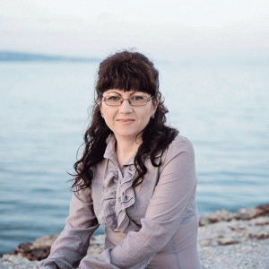
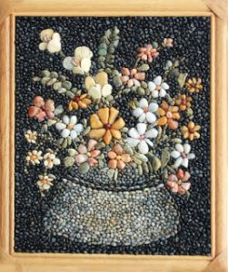
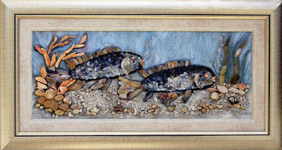

<div class="container">
  <div class="row">
    <div class="col-12 col-md-4" id="mm">
      <div class="card">
        
        <div class="card-body">
          <h5 class="card-title text-center mt-2">Мariya Maneva – Miriyam</h5>
        </div>
      </div>

      <h2 class="d-flex justify-content-center mt-3">Здравейте приятели!</h2>
      <p>
        Тук може да се насладите на моето творчество. Това е една магия, една
        страст, една невероятна любов към морските раковинки и камъчета. Това е
        една наслада от различните им форми и цветове. Това е едно преклонение
        пред величието на природата. Това е моята радост от дългите разходки
        край брега на морето. Това е моето дълго търпение и упорит труд. И
        накрая идва удоволствието от появата на нова картина, родила се от
        вълните.
      </p>
      <p>
        А пълното щастие е тогава, когато това което правя се хареса и на Вас.
        Благодаря Ви, че се спряхте тук!
      </p>
    </div>

    <div class="col-12 col-md-8">
      <div class="col-12 home-container">
        <h2>Мозаечни Пана</h2>
        <p>
          <a [routerLink]="['/']"
            ></a>
          Мозаечните пана са един вид неповторими картини, които сами по себе си
          са уникални. Това е един начин да внесете нова нотка в обзавеждането
          на дом си, придавайки му елемент на екзотика и неповторимо излъчване.
          Естествените материали ще ви внесат неповторимо усещане за наслада и
          връзка с природата.
        </p>
        <p>
          Сами по себе си, тези картини пана са доста трудоемки, даже може да се
          каже, че отнемат невероятно много труд и време, но резултата е
          неповторим. Самото съчетание на форми и цветове, които са естествени и
          сами по себе си уникални, прави всяка картина различна. Дори да се
          цели повтаряне на композицията, няма тази възможност да се дублират
          същите форми и цветове, така че природата, което е Божието творение,
          не ти позволява да правиш масови неща, а те подтиква към шедьоври.
          Техниката е такава, че изисква и рамката на картината да е дървена, а
          самата картина е изцяло от дребни малки камъчета, грижливо събирани по
          брега на морето, сортирани по цветове и подреждани с голяма прецизност
          едно по едно. А лака е завършващата част, който запечатва цвета и
          блясъка на камъчетата и картината сякаш оживява.
        </p>
        <p>
          Всеки който е ценител на изкуството, което е необятно и обширно
          понятие, обединяващо в себе си различни стилове, техники, похвати,
          вярвам че ще намери нещо и за себе си, да се наслади на творбите, а
          защо не и да притежава някои от тях.
        </p>
      </div>
      <div class="col-12 home-container mt-3">
        <h2>Картини пана – смесена техника</h2>
        <p>
          <a href="https://pebbleshellart.com/смесена-техника/"
            ></a>
          Картините пана, изработени със смесена техника са уникални и
          неповторими. Всяка има своя чар и индивидуалност. В тях са вплетени
          материали от морския бряг – различни миди, охлювчета, части от рапани,
          натрошени миди, малки камъчета, пясък. Колорита и разнообразието идва
          от цветовете и формите, които предлага природата. Всяка творба е
          екзотична и със специфично излъчване, нашепвайки за морето, вълните и
          топлите дни. Мислено те пренася там на брега и ти носи една носталгия
          и спокойствие за безгрижните почивни дни.
        </p>
        <p>
          Картините пана със смесена техника, на пръв поглед изглеждат леки
          композиции, но никак не са лесни за изпълнение. Всеки един материал се
          търси по брега на морето по цвят и форма и когато е в достатъчно
          количество, едва тогава може да се пристъпи към работа. Понякога нещо
          се търси с дни или седмици, а може пък да не се намери. За тази цел е
          необходимо голямо търпение и дълги разходки край брега. Сюжетите в
          повече от ситуациите идват според находките. Но хубавото е, че никога
          нищо не се повтаря. Следващата стъпка е прецизното лепене с пинцета,
          съблюдавайки формите и цветовете. След което се акцентира с нанасянето
          на боята и идва завършващия етап, лакирането на естествените
          материали, с което се запечатва цвета и блясъка. Картината оживява. А
          положената подходяща рамка с паспарту, засилват ефекта на творбата.
        </p>
        <p>
          Всеки който обича красотата и хармонията, може да се наслади на тези
          картини пана. Изкуството е необятно, стиловете са различни, техниките,
          похватите са индивидуални и това го прави интересно и предизвикателно.
          Вярвам, че всеки ще намери нещо за себе си, нещо което да го докосне,
          да му донесе наслада. А защо не и да притежава част от тях.
        </p>
      </div>
    </div>
  </div>
</div>
